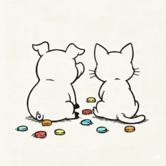

Cloudflare向けの静的ブログとして、農業現場で動物と向き合ってきた経験をもとに、最新の研究論文から動物の知能・感覚・行動の不思議をわかりやすくお届けします。
豚がみみを下げるとき、実は気持ちが違う——知られざる耳の言語を科学的に解説します。
猫が飼い主にだけ見せる5つの愛情行動と、その裏にある科学的な理由。スローブリンクや愛着研究から、猫のサインを読み解きます。
豚の泥浴びは、実は体温調整・虫よけ・日焼け対策のための高度な衛生行動です。犬・猫・鶏との比較も交えて、豚の“きれい好き”を科学的に解説します。
豚の知能は犬や3歳児と同レベル。鏡で自分を認識し、感情を読み取り、仲間と会話する——豚の驚くべき知性を科学的根拠とともに解説します。
犬の嗅覚は人間の数万倍、鶏は4色型色覚で紫外線まで見える。それぞれ異なる感覚に特化した進化の理由を、研究データで徹底解説します。

農業系の学校を卒業後、農業畜産の現場で長く働き、向き合う中で気づいたことがあります。その驚きと発見を科学的な研究データとともにわかりやすくお伝えしたいです。現場経験と動物科学の知識を活かして正確で役立つ情報を発信中。